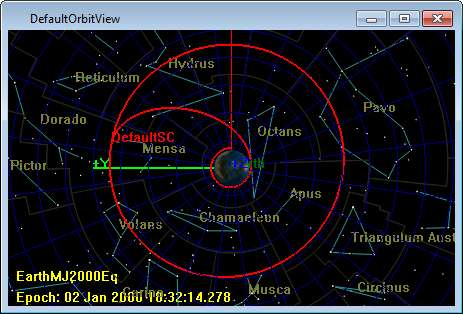

For this tutorial, we will start with a preexisting mission created during the Simple Orbit Transfer tutorial. You can either complete that tutorial prior to this one, or you can load the end result directly, as shown below.
Open GMAT.
Click Open in the toolbar and navigate to the GMAT
samplesdirectory.Select
Tut_SimpleOrbitTransfer.scriptand click .Click Run (
 ) to run the mission.
) to run the mission.
You should see the following result in the DefaultOrbitView window.
|  |